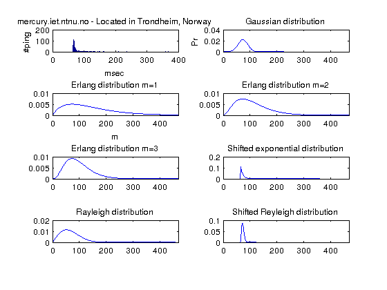

Contents
% HW, Statistical Signal Processing, % Written by Henning Schei %Collecting data from 3 different places choise = 0; close all; if (choise) res=zeros(1000,4); res(1:1000,1) = pingstats('mercury.iet.ntnu.no' , 1000, ''); % Norwegian Univ. of Science and Technology #1 in res res(1:1000,2) = pingstats('atalante.stanford.edu', 1000,''); % Standford University #2 in res res(1:1000,3) = pingstats('mx.vvsu.ru',1000,''); % Vladivostok State University of Econimics and Service #3 in res res(1:1000,4) = pingstats('197.255.176.1',1000,''); %Brazzaville #didn't work %res(1:100,3) = pingstats('archlinux.uib.no',100,''); % 217.74.123.50 % ISP = Vladivostok SU % 197.214.128.4 Airtel Congo. % sykt treg % 197.255.176.1 Brazzaville % 197.220.64.1 , Mogadishu % relativ rask else % Check if data file exists if exist('pingmania.mat') == 2 % unpack from .mat file pingmania.mat tmp = load('pingmania.mat'); res = tmp.res(:,:); % fix 4.colunm else fprintf('You need to add til file pingmania.mat to the current directory\n'); return end end data = res(1:1000,1);
Problem iii) Calculating $$\Theta_{ML_{i}} \ \ $ for each of the distributions
% Gaussian distribution mu_G = sum(data)/length(data); tmp=0; for i = 1:length(data) tmp = tmp + power(data(i) - mu_G,2); end ro_G = tmp/length(data); % Rayleigh ro_R = power(2*length(data),-1) * sum (data.^2); % Erlang distribution m = [1,2,3]; lambda_E = (m*length(data))/sum(data); % Shifted exponential distribution alpha_exp = min(data); tmp=0; for i =1:length(data) tmp = tmp + data(i) - alpha_exp; end lambda_exp = length(data)/tmp; % Shifted Rayleigh %
Problem iv: Superimpose graphs of histograms and marginal denseties
% pdf's: f_G = (1./sqrt(2.*pi.*ro_G)) .* exp(-power( (1:1000)-mu_G,2)./(2.*ro_G)); f_R = ((1:1000)./ro_R).*exp (-(power((1:1000),2))./(2.*ro_R )); M = 1; f_E1 = (power(lambda_E(1),M+1)./(factorial(M))).*power((1:1000),M).*exp(-lambda_E(1).*(1:1000)); M = 2; f_E2 = (power(lambda_E(2),M+1)./(factorial(M))).*power((1:1000),M).*exp(-lambda_E(2).*(1:1000)); M = 3; f_E3 = (power(lambda_E(3),M+1)./(factorial(M))).*power((1:1000),M).*exp(-lambda_E(3).*(1:1000)); f_exp = zeros(1,1000); for i=1:1000 if i< alpha_exp f_exp(i)=0; elseif i>=alpha_exp f_exp(i) = lambda_exp .* exp(-lambda_exp.*(i-alpha_exp)); end end alpha_SR = min(data)+0.01; f_SR = zeros(1,1000); tmp1=0; tmp2=0; for j=1:1000 tmp1 = tmp1 + data(j)-alpha_SR; tmp2 = tmp2 + 1/(data(j)-alpha_SR); end ro_SR=tmp1/tmp2; for i =1:1000 if i<alpha_SR f_SR(i)=0; elseif i>=alpha_SR f_SR(i)= ((i-alpha_SR)./ro_SR)*exp(-((i-alpha_SR).^2)./(2*ro_SR)); end end figure; % Plotting histograms and margnial densisies subplot(4,2,1) hist(res(:,1), 500); xlabel 'msec' ylabel '#ping' title 'mercury.iet.ntnu.no - Located in Trondheim, Norway'; subplot(4,2,2) plot(f_G) xlim([0 max(data)+100]) xlabel 'msec' ylabel 'Pr' title 'Gaussian distribution' subplot(4,2,3) plot(f_E1); xlim([0 max(data)+100]) xlabel 'm' title 'Erlang distribution m=1' subplot(4,2,4) plot(f_E2) xlim([0 max(data)+100]) title 'Erlang distribution m=2' subplot(4,2,5) plot(f_E3) xlim([0 max(data)+100]) title 'Erlang distribution m=3' subplot(4,2,6) plot(f_exp) xlim([0 max(data)+100]) title 'Shifted exponential distribution' subplot(4,2,7) plot(f_R) xlim([0 max(data)+100]) title 'Rayleigh distribution' subplot(4,2,8) plot(f_SR) xlim([0 max(data)+100]) title 'Shifted Reyleigh distribution'
Problem v)
Finding the distribution that maximizes the likelihood:
figure; sw = mean(data)-1:000.1:mean(data)+1; for k=1:length(sw) L(k) = exp(-(sum(data-sw(k)).^2)./2); k=k+1; end plot(sw,L) % Gaussian distribution p_G = mle (data); % Rayleigh distribution % p_R = mle (data, 'pdf', f_R, 'start',0); % % Erlang distributions % p_E1 = mle(data,'pdf',f_E1, 'start', 0); % p_E2 = mle(data,'pdf',f_E2, 'start', 0); % p_E3 = mle(data,'pdf',f_E3, 'start', 0); % % Shifted exponential distribution % p_exp = mle(data,'pdf',f_exp,'start',min(data)); % % Shifted Rayleigh distribution % p_SR = mle(data,'pdf', f_SR,'start',min(data)); % Is the mean of a shifted dist the same as the unshifted mean + shift???? % % % figure; % hist(res(:,2),500); % xlabel 'msec' % ylabel '#ping' % title 'atlante.standford.edu - Located in California'; % figure; % hist(res(:,3),500); % xlabel 'msec' % ylabel '#ping' % title 'mx.vvsu.ru - Located in Vladivostok, Russia.'; % close all %res = res';